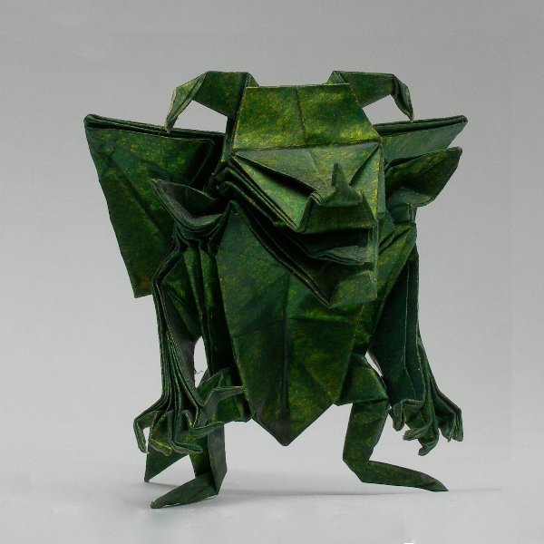

Origami TodayOrigami Today
Origami TodayOrigami Today
Haylie Elise has been folding paper for as long as she can remember. She brings simple traditional origami models to life and folds complex creations designed by modern masters, such as Jun Maekawa's Demon. Haylie's folded masterpieces are available for your wedding, personal collection, corporate event, or other gathering. She lives in Asheville, NC with her pet goldfish Günter. (But pieces can be shipped anywhere in the world.)
The word origami stems from two Japanese words - Oru (meaning to fold) and Kami (meaning paper). The ancient art of paper folding originated in China around the first century A.D. and made its way to Japan by about the sixth century.
Traditional origami requires the folding of a single uncut square. Cutting is not permitted, nor is gluing or any type of adhesive. Modular origami, however, involves folding several smaller units and joining them together. Again, gluing is frowned upon as a well-designed model should lock into place on its own.
Perhaps the most renowned origamist is Akira Yoshizawa, born in Japan in 1911. Not only is he responsible for the design of well over 50,000 origami models, but he is credited with single-handedly popularizing the art. Haylie will be teaching some of his simple traditional models as well as more complex modern designs, including the Japanese Good Luck Demon by Jun Maekawa, at the South Library at . Members of SPOT get priority seating.
All content © 2018 Haylie Elise